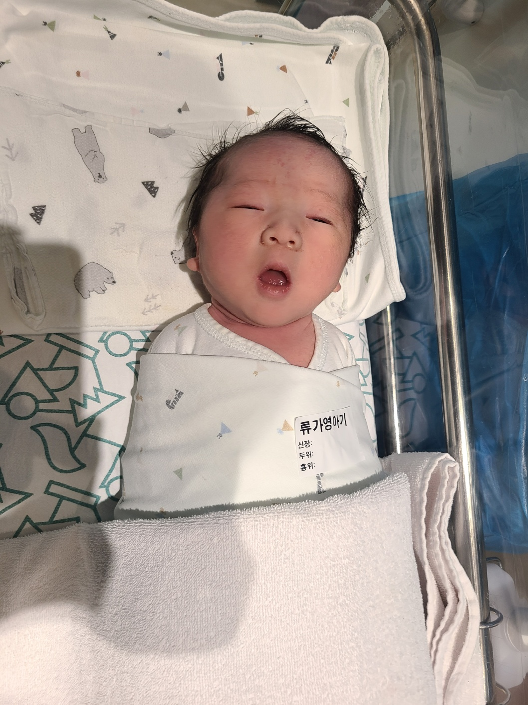
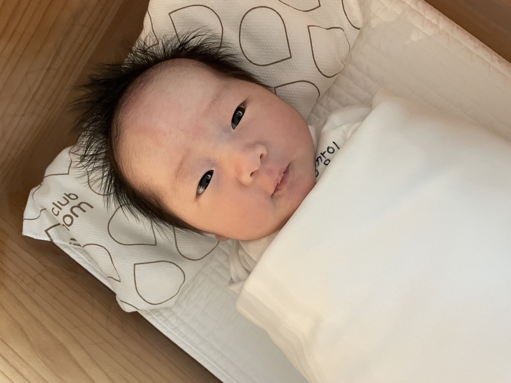
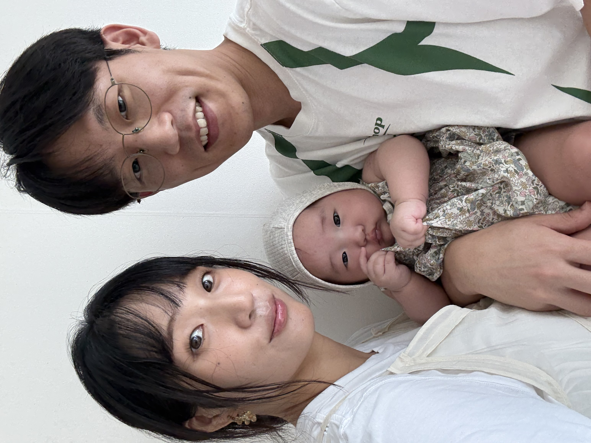
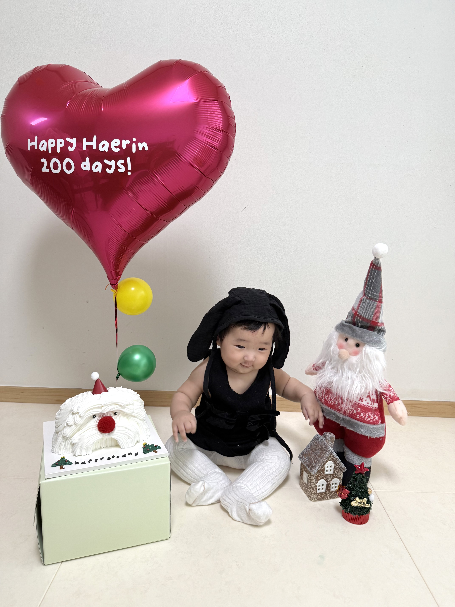
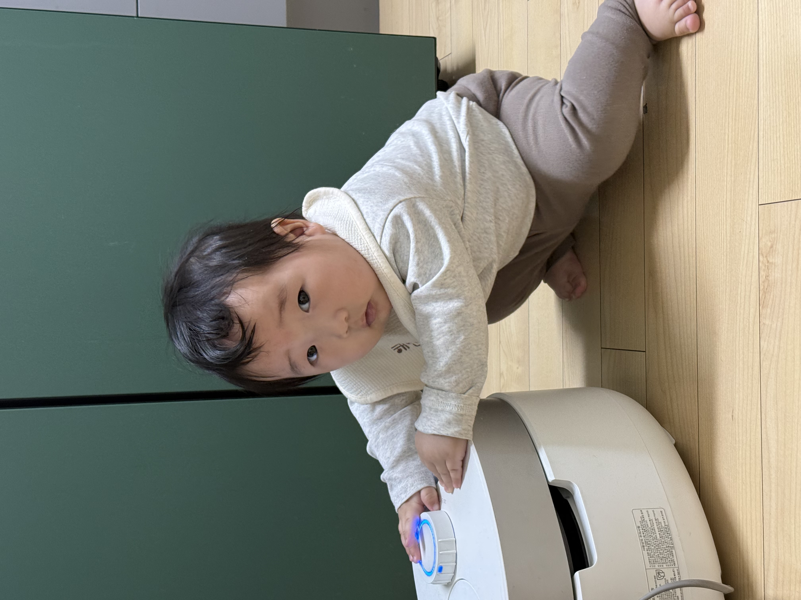
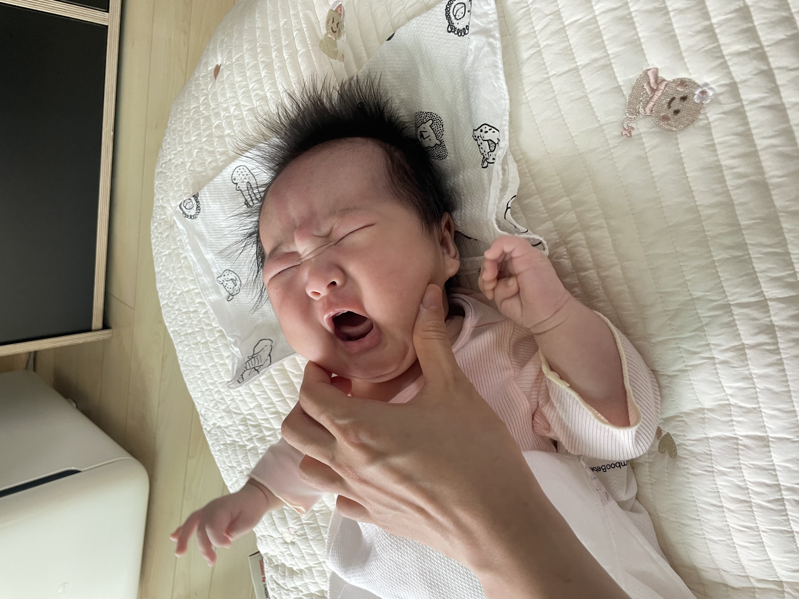
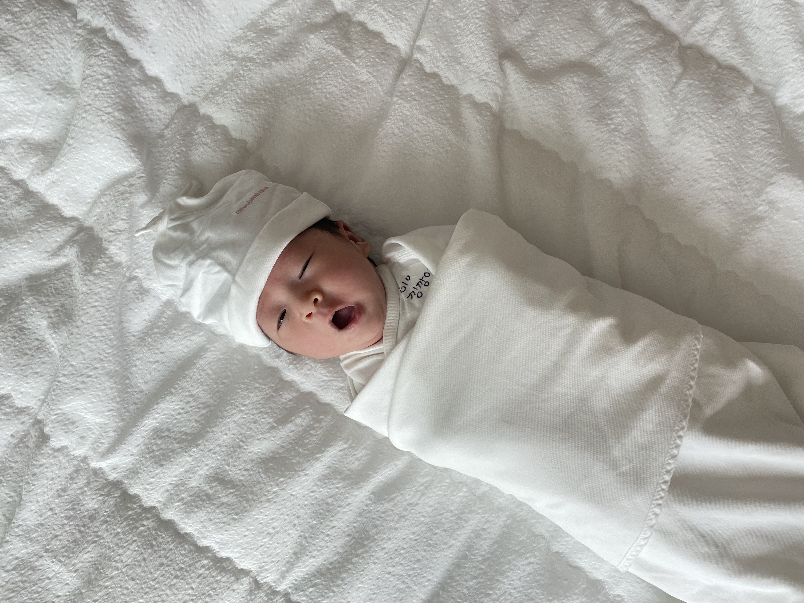

2025.05.12 · birth
세상과 처음 만난 날
오전 11시 42분, 3430g의 작고 소중한 해린이를 처음 만난 순간입니다.

오전 11시 42분, 3430g의 작고 소중한 해린이를 처음 만난 순간입니다.

세상에 적응하듯 눈을 천천히 뜨고 바라보던 얼굴이 아직도 생생합니다.

가족 모두가 함께 웃으며 남긴 백일 촬영은 오래 기억하고 싶은 장면이 되었어요.

하루가 다르게 표정이 풍성해지고, 웃음도 반응도 점점 더 많아졌습니다.

작은 입으로 천천히 맛보던 모습이 귀여워서 모두가 숨죽여 바라봤던 순간이에요.

이제는 먹는 시간도 놀이처럼 즐기며 하루하루 더 야무진 모습을 보여줍니다.

배밀이와 기어다니기로 집 안 구석구석을 직접 탐험하기 시작했어요.

배고플 때도, 졸릴 때도, 원하는 걸 또렷하게 전하는 해린이의 표정이 너무 사랑스러워요.

작고 여린 해린이를 품에 안고, 가족이 되었다는 사실이 더 선명하게 느껴졌던 날입니다.

호기심 가득한 눈빛으로 주변을 둘러보는 모습에서, 해린이의 씩씩한 내일이 보였습니다.